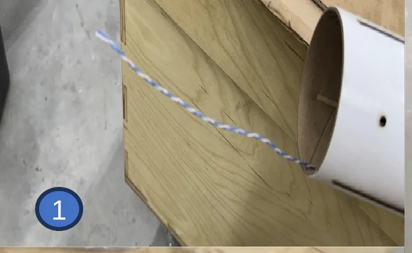
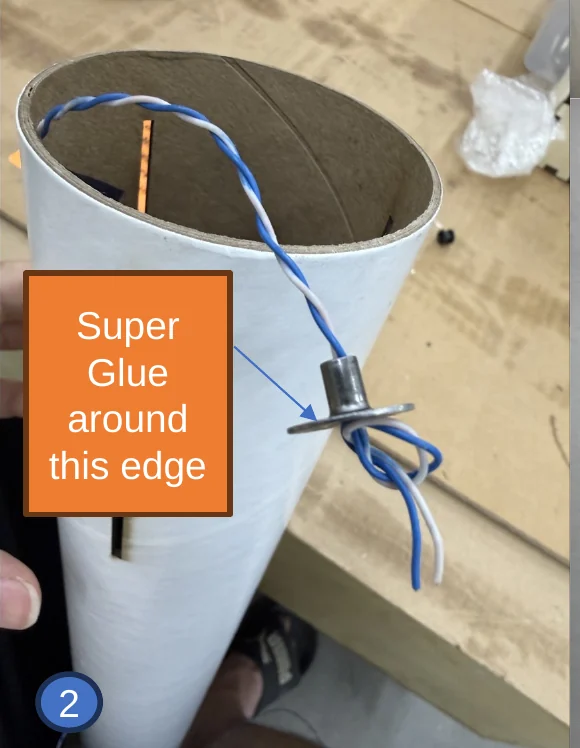
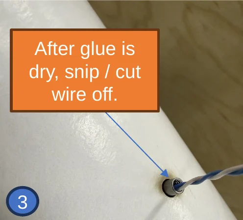
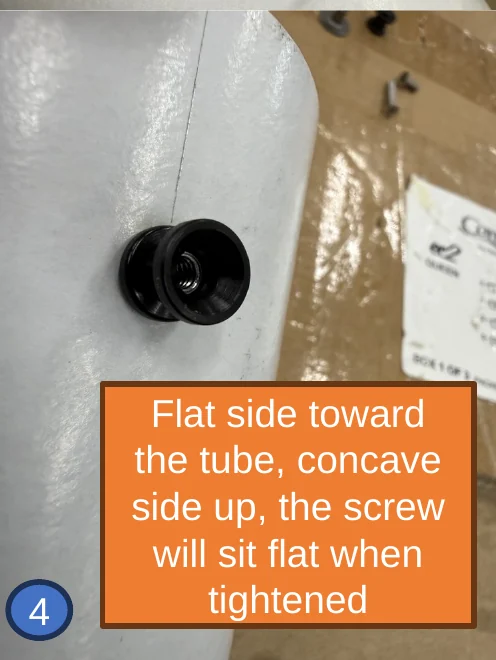
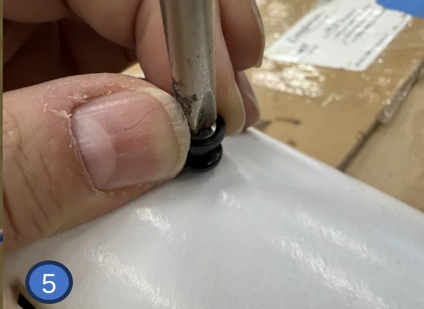
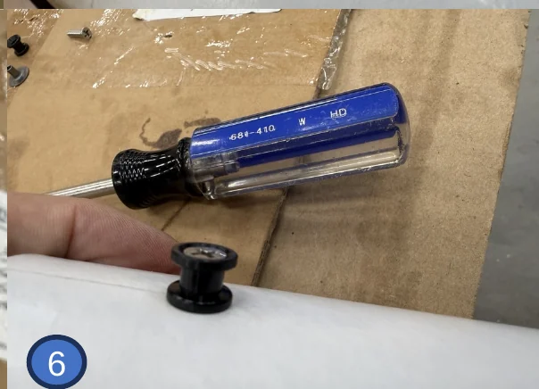

Install the forward rail button
The forward hole is too far down the tube to reach with a finger, so the weld nut gets pulled into place with a piece of 18–22 gauge wire about 24 inches long.
- Thread the wire in through the forward rail button hole from the outside and out the aft end of the tube.
- Slide the weld nut onto the wire, pointy side toward the inside of the tube. Tie an overhand knot (shoe knot) in the wire so the nut cannot come off.
- Put superglue around the weld nut, then gently pull the wire until the nut seats in the hole and the point is sticking out. Hold for 60 seconds while the glue sets.
- Cut the wire off right at the nut with scissors or wire cutters.
- Put the rail button on the nut — flat side toward the tube, concave side out — and start the screw by hand.
- Pull the rail button outward while you screw it down. Snug is good.
The numbered photos below match the numbered steps above — arrows and labels are from the original build briefing.
If you have never done this, do a test pull with no glue first.
Be very careful not to push the nut back into the body — you cannot get it back.
Do not overtighten. The rail button will crack.





